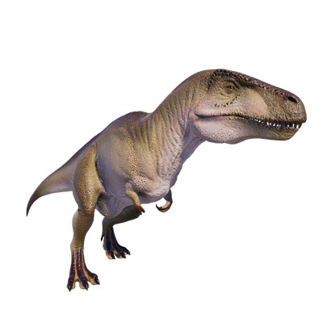

Useful Website
At around 12m in length and more than six tonnes in weight, Acrocanthosaurus is one of the largest theropods and dates back to the Early Cretaceous period. This carnivorous dinosaur gets its name – which translates to ‘high-spined lizard’ – from the elongated spines running the length of its neck and back, while its sharp teeth and powerful jaw make it a fearsome predator comparable to the much more well-known Tyrannosaurus rex.
